To help get your create juices flowing, this vignette shows a banana rendered in a variety of styles. You can find the complete source in styles.yml.
art-nouveau
Art Nouveau decorative illustration with sinuous organic lines, ornamental border motifs, muted jewel-tone palette, and elegant typographic sensibility.
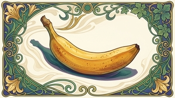
claymation
Stop-motion claymation with visible fingerprints in soft modeling clay, rounded chunky forms, slightly wobbly edges, warm studio lighting, and a shallow depth of field
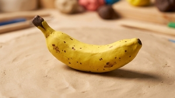
copic
Loose Copic marker sketch with expressive ink outlines, visible broad alcohol-marker strokes, layering for shading, and a vibrant concept-art aesthetic
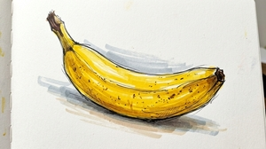
embroidery
Hand embroidery on linen with visible thread texture, satin stitch fills, French knot accents, and a cozy handcraft aesthetic
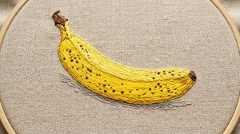
folk-art
Scandinavian folk art with symmetrical floral motifs, warm red and blue palette on a cream background, flat decorative shapes, and hand-painted charm
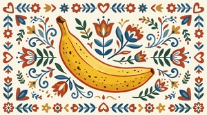
gouache
Chunky gouache illustration with opaque matte colors, visible brushwork, bold simplified shapes, and a mid-century children’s book feel
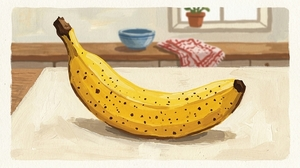
inkwash
Delicate Chinese ink wash painting with masterful negative space, graduated ink tones, calligraphic brushwork, and poetic minimalism.
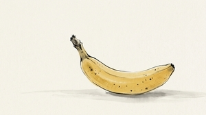
isometric
Clean isometric 3D illustration with flat shading, pastel color palette, precise geometric angles, and a modern infographic aesthetic.
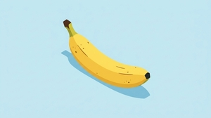
memphis
Corporate Memphis illustration with flat oversized shapes, simple rounded forms, bright but muted primary colors, minimal detail, and the cheerful generic style of Silicon Valley tech marketing. Plain background
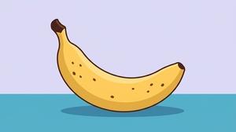
mosaic
Ancient Roman mosaic with small tessera tiles, earthy terracotta and ochre palette, slightly irregular grid, and the textured look of stone and ceramic fragments
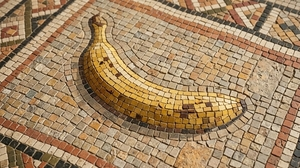
neon
Glowing neon sign against a dark brick wall, with bright tubular light, subtle color spill on surrounding surfaces, and a warm nighttime atmosphere
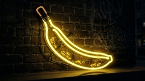
oil-impasto
Oil painting with vibrant colors and thick impasto brushstrokes, rich texture, and saturated warm tones
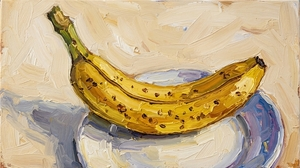
papercut
Papercut collage with layered construction paper shapes, visible cut edges, bold flat colors, and subtle drop shadows between layers
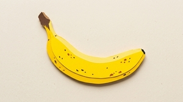
pixel
16-bit pixel art with a limited retro palette, crisp square pixels, dithering for gradients, and a nostalgic video game aesthetic
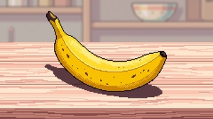
pop-art
Bold Pop Art in the style of Lichtenstein with Ben-Day dots, thick black outlines, flat primary colors, and a comic-book panel composition.
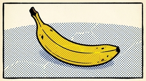
risograph
Risograph print aesthetic with slightly misregistered layers, limited duotone or tritone palette, halftone dots, and characteristic grainy texture.
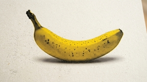
stained-glass
Stained glass window with thick dark leading lines, luminous translucent color panels, geometric fragmentation, and the warm glow of backlit glass
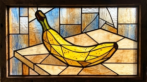
watercolor
Loose botanical watercolor with soft wet-on-wet bleeds, delicate translucent washes, fine pencil underdrawing, and natural white paper showing through
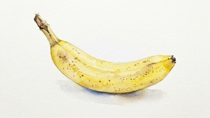
woodblock
Japanese ukiyo-e woodblock print with flat color planes, bold black outlines, subtle wood grain texture, and traditional compositional balance.
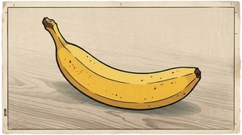